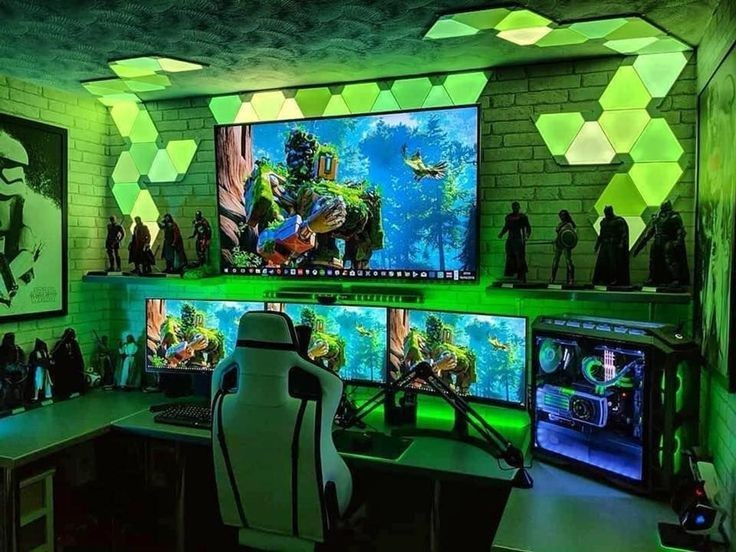

About me
Welcome to my corner of the web! I study computer science at UW Bothell, and I am part of the class of .
Outside of class I like building small software projects, cooking food that takes a little too long to make, and learning how languages work. I am also curious about quantitative finance, which is the use of math and programming to study financial markets.

Quick facts
- Studying
- Computer science
- School
- UW Bothell
- Currently learning
- Egyptian Arabic
- Favorite dish to cook
- Koshari (see the recipe page)
A motto
Make it work, then make sure I can explain why it works.